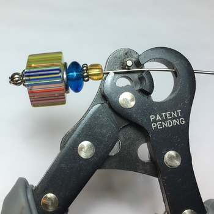
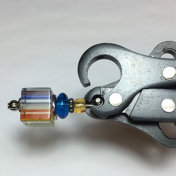
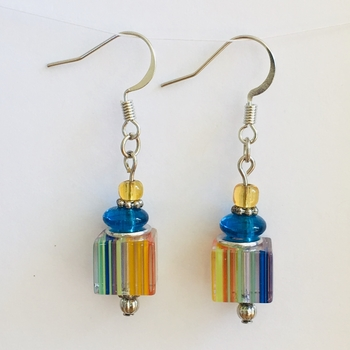

Jewelry Making Tutorials
So you'd like to learn how to make jewelry of your own? You've stopped by the right place! With my help and a few supplies, you'll be on your way to creating the perfect accessory.
Simple Beaded Earrings
This tutorial will walk you through the process of creating simple beaded earrings.
Materials and Tools Needed:
- 2" Head Pins
- Round Silver Striped Plated Beads 4mm
- Daisy Spacer Beads 5mm x 1mm
- Striped Glass Cube Beads
- Flat Washer Spacer Beads
- Blue Glass Beads
- Yellow Opaque Glass Seed Bead 6/0
- Flat Fish Hook Ear Wires 18mm
| Step 1 - Thread your beads onto the head pin in order, from left to right, as shown below. |  |
|
The beads should look like this when threaded in the proper order. |
 |
|
| Step 2 - Use a 1-Step Looper tool (or wire cutters and long-nose pliers) to trim and curl the end of the head pin close to the beads. |  | |
| If using a 1-Step Looper tool, your head pin will be trimmed and curled as shown below. |  | |
Step 3 - Hook the curled end of the head pin through the loop on the bottom of the ear wire. Use long-nose pliers to close the loop on the head pin. |
Behold, your finished product. Enjoy! |  |